UDN
Search public documentation:
GameplayDebugging
日本語訳
中国翻译
한국어
Interested in the Unreal Engine?
Visit the Unreal Technology site.
Looking for jobs and company info?
Check out the Epic games site.
Questions about support via UDN?
Contact the UDN Staff
中国翻译
한국어
Interested in the Unreal Engine?
Visit the Unreal Technology site.
Looking for jobs and company info?
Check out the Epic games site.
Questions about support via UDN?
Contact the UDN Staff
UE3 Home > Gameplay Programming > Gameplay Debugging
Gameplay Debugging
Overview
Remote Control
-wxwindows command line argument.
For more information and a complete guide to using this feature, see the Remote Control page.
Property Inspection and Manipulation
Object Data Manipulation
These console commands allow you to open a property window for an in-game object or even for the class default object, which can then be viewed or modified at runtime. Note that there is aNone category that contains all the variables that have not been declared with var(), giving you complete access to all of the object's data.
As these commands rely on property windows external to the game window which are created using wxWindows, these commands are unavailable if wxWindows is disabled, which it is by default. To enable wxWindows and thus these console commands, the game must be run with the -wxwindows command line argument.
Note: This will also enable the Remote Control. You can also add the -norc command line argument to disable the Remote Control window if you like.
EditActor
Theeditactor console command makes the properties of an actor in the game available in the property window. This command only works for classes extending from Actor.This command can take a name or a class as an argument. Optionally, the trace argument can be passed in place of the name or class causing the Actor the player's camera is currently aiming at to be used.
If a name of an Actor is specified, either with the name= prefix or not, the properties of that Object will be displayed.
editactor name=UTPawn_0This will open a property window for the object
UTPawn_0.
If a class is specified, the properties of the first Actor of that class, or a subclass thereof, are displayed.
editactor class=UTPawnThis will choose the first
UTPawn. In this case, it would most likely open the properties for the current player's UTPawn.
If the trace argument is specified, the properties of the Actor being aimed at are displayed.
editactor traceThis will open a property window for the object at which the camera is aiming. Example Usage: In the case of creating a new vehicle, the need to fine-tune the properties of the vehicle to make driving feel right will no doubt arise. Setting the property values in the defaultproperties or even in an .ini file would require starting the game up, testing out the current values, shutting the game down, tweaking the values, starting the game up again, testing the values, etc. This is obviously less than ideal and not very efficient by any means. Using the
editactor command allows any and all of the properties of the vehicle to be tweaked while the game is running, even while the player is sitting in the vehicle ready to test it out. This is a much more efficient and intuitive method of tuning gameplay.
The simplest method here is probably to use the trace argument and just aim at the vehicle in question, but specifying the class is easy enough as well.
For vehicles, it may be unlikely you will know the exact name of the vehicle as they are usually spawned dynamically from factories and not placed directly in a map.
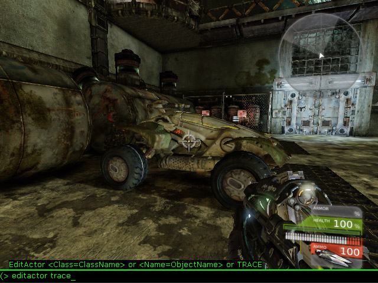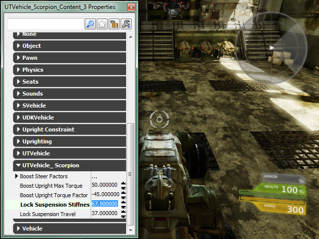
EditObject
Theeditobject console command makes the properties of a specific object in the game available in the property window. This command is functionally identical to the editactor command without the limitation that the class must extend from Actor and it has no optional trace argument.
Note: This command may not work for certain classes or objects when running a map from within UnrealEd through a Play In Editor session.
If a name of an Object is specified, either with the name= prefix or not, the properties of that Object will be displayed.
editobject GameThirdPersonCamera_0 editobject name=GameThirdPersonCamera_0Both of these are functionally identical, and will display the properties for the
GameThirdPersonCamera_0 object.
If a class is specified, the properties of the first Object of that class, or a subclass thereof, are displayed.
editobject class=GameThirdPersonCameraThis will choose the first
GameThirdPersonCamera. In this case, it would most likely open the properties for the current player's GameThirdPersonCamera.
Example Usage:
Implementing a camera other than first person usually requires having the camera offset from the player mesh, among other aspects that may need tuning. Of course, getting the camera offset the proper distance to get the desired look and feel can be tricky. You certainly do not want to be constantly going back and forth between code and testing needing to compile with each tweak. If you are also working with a system similar to the modular system that is part of the GameFramework examples that means you are dealing with objects and not actors. The editobject command enables you to easily view and modify the properties of those modules with the game running to make the process of tweaking your camera extremely simple and incredibly intuitive.
By using the editobject command and passing it the class of the camera module, the properties for the module will be displayed and tuned to get the offset just right.
editobject class=UDNCameraModuleThis will open the property window for the camera module currently in use. 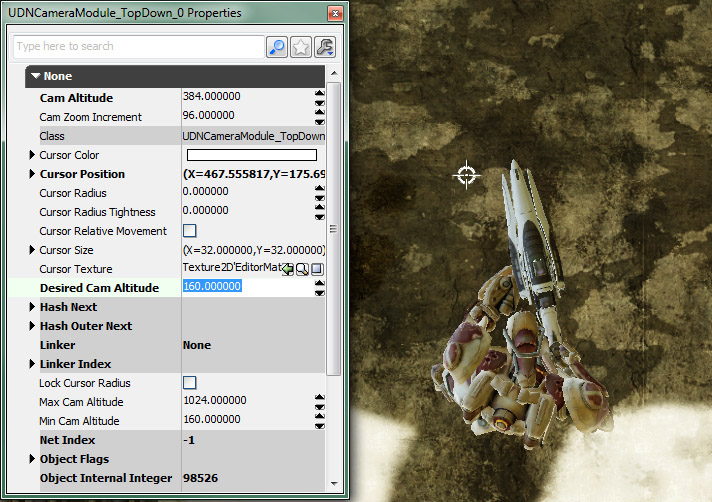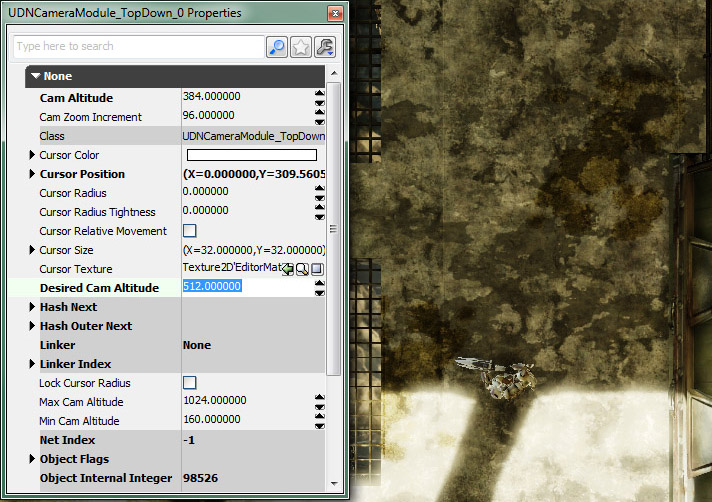
EditDefault
Theeditdefault console command makes the properties of a class default object available, similar to specifying a class with the editobject console command. The class can be specified using the class= prefix, but it is not necessary. This command is extremely useful for classes that are frequently spawned, such as projectiles or units in a real-time strategy game.
Note: This command is not allowed when running a map from within UnrealEd through a Play In Editor session.
Example Usage:
Tweaking the behavior of projectiles can be tedious if you are constantly going between code and testing. By editing the default values directly inside the game while you are testing, the process becomes extremely streamlined.
Simply use the editdefault command and pass it the name of a projectile class:
editdefault UTProj_LinkPlasma editdefault class=UTProj_LinkPlasmaBoth of these are functionally identical and will display the default properties of the
UTProj_LinkPlasma class which can then be modified allowing you to adjust the behavior of all future instances of that class.
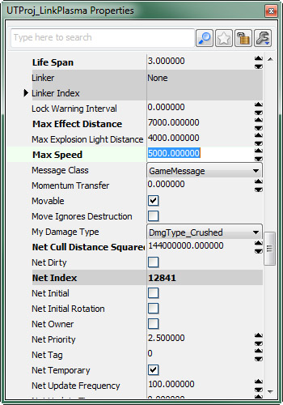
EditArchetype
Theeditarchetype console command makes the properties of an archetype available. The archetype to edit is specified by passing the path (Package.Group.Name) to the archetype following the command. Like the editdefault command, this command is also extremely useful for archetypes that are used as templates for objects that are frequently spawned, such as projectiles or units in a real-time strategy game, or for archetypes used as data definitions or content holders.
In addition to being able to edit the properties of the archetype, the settings can be saved to the archetype in the package using the button in the properties window so they are not lost.
Note: This command is not allowed when running a map from within UnrealEd through a Play In Editor session.
Example Usage:
Say you have a weapon class set up to use archetypes as templates for its projectiles. This allows the look and behavior of the projectiles to easily be tweaked without having to modify and recompile the scripts. However, it would also usually require running the game and testing, closing the game and making changes, running the game and testing, etc. By using the editarchetype command, the modifications can be made while the game is running for an easy and efficient workflow.
The projectile using the current settings of the archetype:
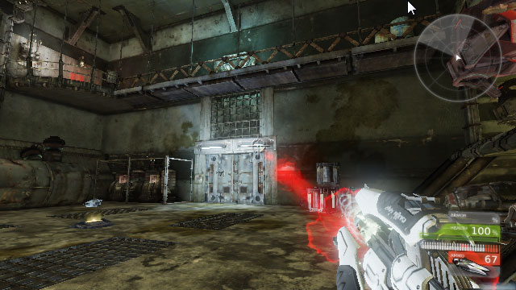
Simply use the editarchetype command and pass it the path of the archetype:
editarchetype UDNProjectiles.RedPlasma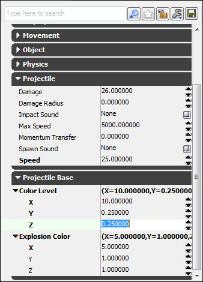 By modifying the proeprties, the look and behavior of the projectiles is changed in realtime: 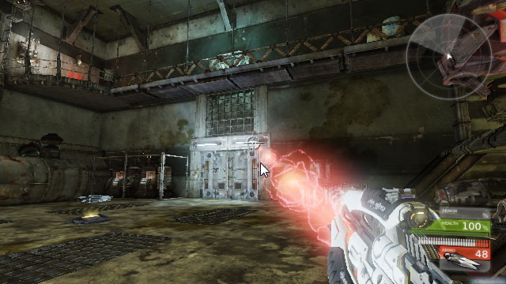 Once you are satisfied with the settings, press the button in the proeperties window to save the current settings to the archetype.
Static Object Data Inspection
These console commands are useful for inspecting a static snapshot of object data while the game is running. They will capture the values of the specified data at the time the command is executed and display that data in the console and output it to the log as well.GetAll
Thegetall console command returns the value of a particular variable for all objects of a particular class and displays them in the console in-game, visible by pressing the '~' key, and outputs them to the log. The command is followed by the name of the class and variable within that class to access.
Example usage:
When implementing a new custom camera system, it can be frustrating to run the game to test out the new camera only to find it not working as expected. It is possible the camera is not functioning correctly, but it could be something more simple such as the camera is not getting created and assigned correctly in the first place. Adding log statements to the code and then running the game and then closing the game to check the logs to see the results is one method to see if the camera is getting assigned. However, it would be so much easier and efficient if you could check right there in the game while it is running. The getall command makes this possible.
By using this command and passing it your custom PlayerController class and the name of the camera variable contained within it, the current value of that variable will be displayed right there in the console, immediately letting you know if the camera is not being assigned properly or if the problem lies elsewhere.
getall UDNPlayerController PlayerCameraThis will list out the
Name and PlayerCamera of every UDNPlayerController actor in memory in the console in-game.
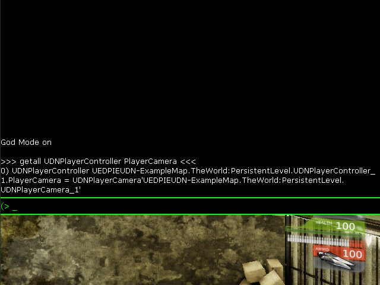
Since the PlayerCamera has a value and not None, you know the camera is being assigned properly.
Additional Parameters:
This command can also be used to obtain the value of a particular variable for a single instance of a particular class by specifying some optional parameters.
- Name= - Displays the particular variable's value for the
Objecthaving thisName. - Outer= - Displays the particular variable's value for all instances of the specified class having this
Objectas itsOuter.
- SHOWDEFAULTS - Displays the default value for the particular variable in addition to the current value.
- SHOWPENDINGKILLS - Displays instances even if they are orphaned and pending deletion.
- DETAILED - Displays detailed information about the instance(s) via the
GetDetailedInfoInternal()function.
GetAllState
Thegetallstate console command returns the current state of all objects of a particular class and displays them in the console in-game, visible by pressing the '~' key, and outputs them to the log. The command is followed by the name of the class to access.
Example usage:
getallstate UTPawnThis will list the current state of every
UTPawn in memory in the console in-game.
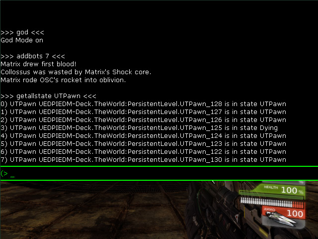
This gives you a quick overview of what the UTPawns in the game are doing. It can quickly point out an anomaly, such as you see in the screenshot as this snapshot was taken at the time the bots were spawning and yet one UTPawn is in the Dying state.
Dynamic Object Data Inspection
These console commands are useful for inspecting object data as it changes over time. They will display a set of data which dynamically updates each frame directly on the screen overlaying the game as part of the HUD.DisplayAll
Thedisplayall console command returns the value of a particular variable for all objects of a particular class and displays them on the screen. The command is followed by the name of the class and the variable within that class to access.
Example usage:
displayall UTPawn LocationThis will list the
Name and Location of every UTPawn on the screen, updated every frame.
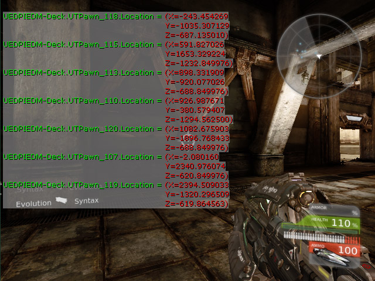
DisplayAllState
Thedisplayallstate console command returns the current state of all objects of a particular class and displays them on the screen. The command is followed by the name of the class to access.
Example usage:
Creating believable AI in a game is a difficult task to begin with, but without a way to keep an eye on all the AI as they interact it would become even more so. The displayallstate command makes one aspect of this quick and easy. You can have the current state of every AI entity displayed right on the screen, updating every frame as they make new decisions.
By using this command and passing it the class of the AI entities, you can have an overview of your AI at the ready.
displayallstate UTBotThis will list the current state of every
UTBot in memory on the screen, updated every frame, making it extremely easy to see exactly what each bot is doing.
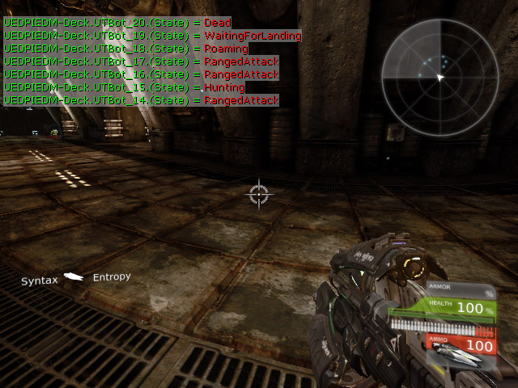
DisplayClear
Thedisplayclear console command clears all object data currently being displayed on the screen. This command takes no arguments.
Example usage:
displayclearThis will clear the object data being displayed on the screen from a previous DisplayAll or DisplayAllState command. 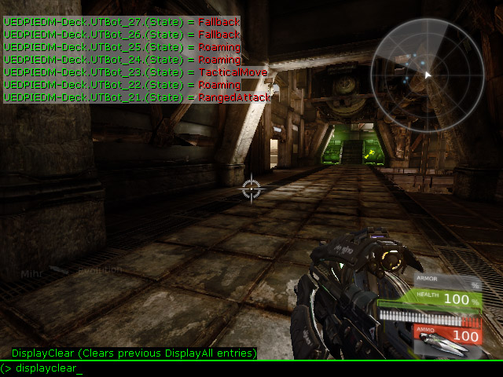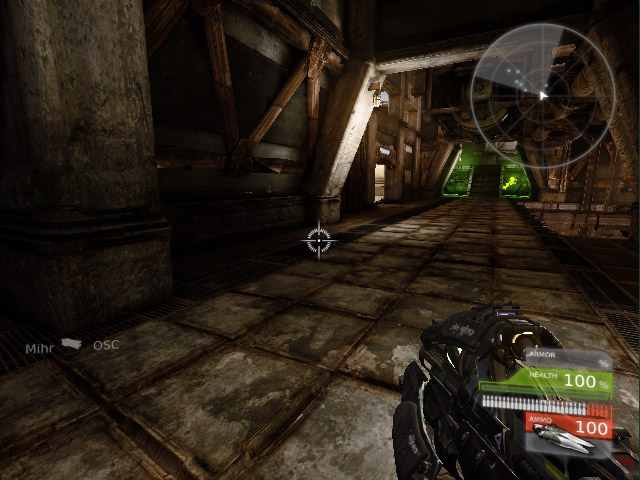
Object Data Modification
Set
Theset console command will set the value of a variable for all instances of a particular class, as well as the class default object. The command is followed by the name of the class, the variable within the class to modify, and the value to set the variable to. This can be very useful for tweaking weapons, projectiles, bots, units in an RTS, etc.
Note: This command is not allowed when running a map from within UnrealEd through a Play In Editor session.
Example usage:
Balancing weapons can be a tricky feat, constantly tweaking properties to get just the right combination so that no one weapon is overpowering the others. No one in their right mind would want to try to do this by resorting to changing properties in code and compiling and testing. And since you really want to affect all instances of the weapons at once, the editactor command just will not cut it. The set command, however, is perfectly suited for such a task.
By this command and passing it a class name, a variable name, and a value for that variable, it is easy to modify the value of that variable for all instances of that class that currently exist and any instances that may be spawned subsequently.
set utweap_linkgun maxammocount 150This will increase the maximum ammo count that all link guns can hold. 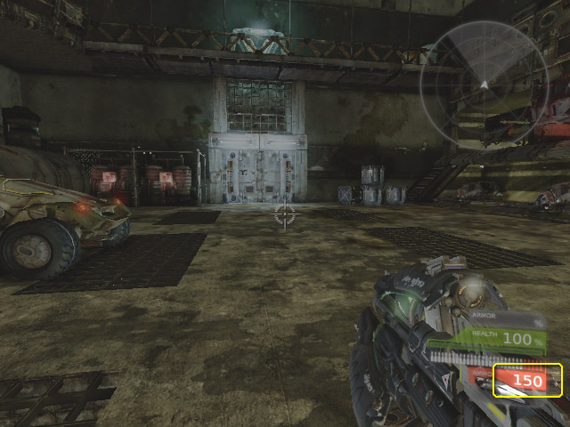
Gameplay Code Profiling
STAT Commands
STAT GAME command is especially useful as it shows the cumulative time your scripts are taking to update each tick.
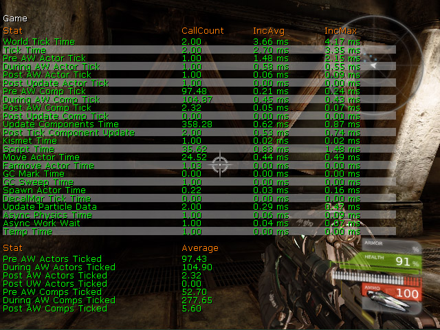
For more information on this and other STAT commands, see the Stats Description page.